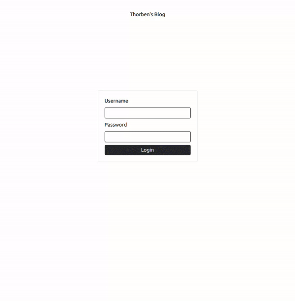
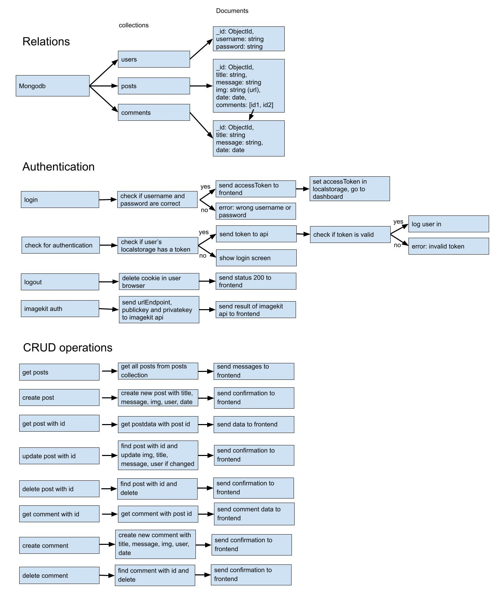

Thorben's Blog
Functionality
- view posts with comments
- post comments on post
- login with username and password
- create posts
- update posts
- delete posts
- delete comments
Technologies used
- NodeJS
- Express
- Mongodb
- React
- Tailwindcss
- React router
Showcase of project
Client

Editor client
Frontend
I used ReactJS with tailwindcss for both clients. Both clients use the fetch api to communicate with the server. The server sends back JSON data that is then loaded in a post, postpreview or comment component. This was my first project using tailwindcss, I really enjoyed it because development feels way faster compared to normal css.
Backend
Because this is the largest project I have yet built, I wanted to use a pattern to increase readability and make the code easy to change later. To achieve this I implemented MVC (Model, View, Controller). Since the server only has to send back data, I did not use views. But having kept the routes and controllers seperate makes it way easier to navigate through the code.
Authentication
Only the editor client needed authentication on this project, because everyone should be able to view the blog posts on the client. And since I will be the only one creating blogs, I did not want to implement a complete signup and login system. So I built a very easy system that just checks the username and password and if these are correct I can authorize the user.
Authorization
For my members only project I used sessions to authorize the user, so I wanted to learn and use something else for this project.
For this project I used JWT (JsonWebToken). Once the user has entered the correct username and
password a token is created and sent to the frontend. In the frontend this token is set in localstorage for later use.
If the user enters the website,
their localstorage will be checked if it contains a token. If it does, this token will be validated. If the token is correct, the user will be logged in without
having to enter their username and password.
Imagekit
I wanted to be able to store an image witha post, but because images can be of quite a big size I would need something other than what I was using for my other data. The option mongodb was offering (gridfs), was not easy to configure. I had a real hard time with their documentation so I looke for something else. So I found Imagekit. Imagekit has quite a lot of features but I only needed to upload and view images. Luckily their documentation was great and I had image support running in a few hours.
Storing data and functionality
In the image below you can see how the data is stored and how the functionality works on a high level.
